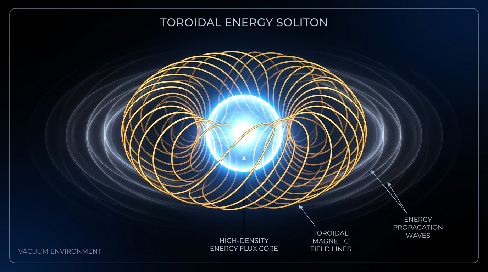
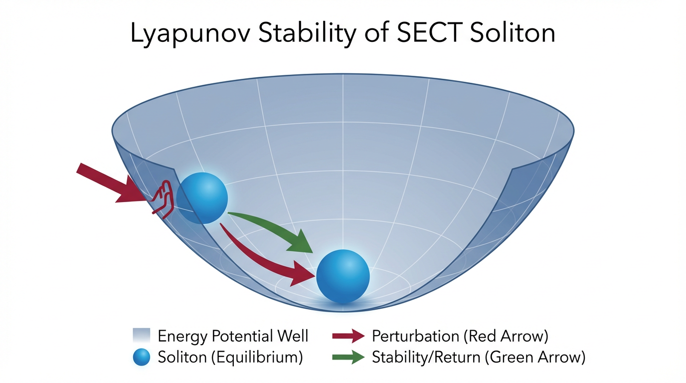

Un nuevo paradigma clásico para el autoconfinamiento de energía sin campos externos.
SECT demuestra que la geometría y la auto-interacción del campo pueden generar masa efectiva de forma autónoma.

Desde la ingeniería, la estabilidad se garantiza si el estado fundamental es un mínimo local estricto de energía. Cualquier perturbación obliga al sistema a volver al equilibrio.
